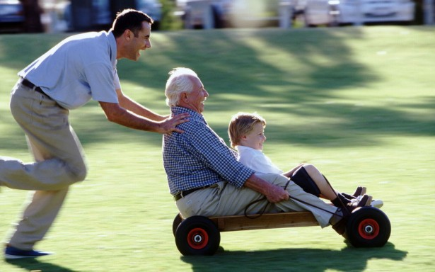

У отца сегодня день рождения. Круглая дата. Не такая круглая, как 10 лет назад, но все-таки. Приедет на выходных — отметим.
В детстве всегда кажется, что взрослым не станешь никогда. Что-то должно обязательно случиться, что на детстве всё и закончится. Ну конец света может какой или еще что.
Годы идут. Школа… институт… женитьба-замужество. А детство всё не кончается. Кому-то конечно удается обзавестись пузом, джипом и гонором. Продать детство за атрибуты. Но большинство кажется не торопится. Кажется и сейчас можно привязать банку к трамваю и ехать на задней площадки, и смотреть на неё. Правда не поймут, наверное, что скажет та тётенька?
Но даже те, которые с пузом, подвыпив к примеру, или просто оставаясь с самыми близкими друзьями наедине, оказываются всё теми же Андрюхами, Женьками, Саньками. Приоткрывается не до конца запертая дверка в детство и Андрюха лезет танцевать в кузов грузовика на стоянке, Лёшка час проводит за радиоуправляемой машиной, а Санёк пускает по воде на пруду «блинчики». Те, у которых «не приоткрылась» скажут „пионерская зорька в жопе играет“. И видно опять, что детство никуда не уходило.

Взрослые люди кажется все обязательно старше тебя. В 10 лет взрослыми кажутся те кому 20. Ну это ведь реально взрослые пацаны и девчонки.
Наступает тебе 20 и опа. Ничего такого. Вот 30… да-а-а. В 30 кризис будет, это возраст Христа, а Лермонтов так и вовсе не дожил.
Странно, но в 30 тоже ничего не меняется. Ты еще ждешь, что ну вот. Вот она жизнь взрослого человека. Но нет. Взрослые те, кому за 40. Они наверняка опытнее, пережили пресловутый кризис, знают как сносить удары судьбы.
То же самое будет и в 40. В 50 лет будет казаться, что те кому 60 взрослее тебя по всем параметрам, а в 70… Ну кто там знает что в 70. Не закрывайте дверцу в детство. Ёё нельзя будет открыть вновь.
Отметим в субботу очередной детский день рождения.
p.s. А мне сегодня сын сказал, что я самый весёлый папа )